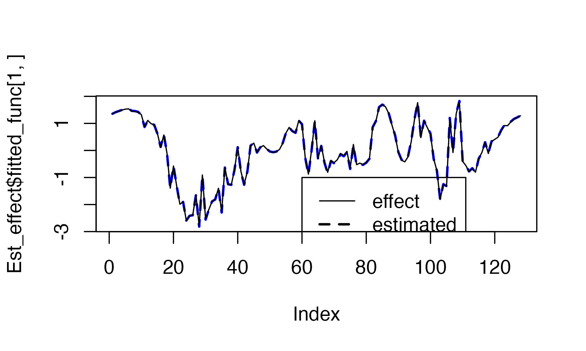
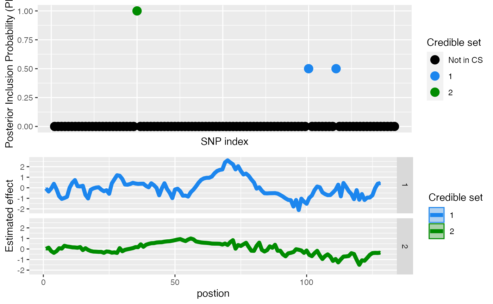
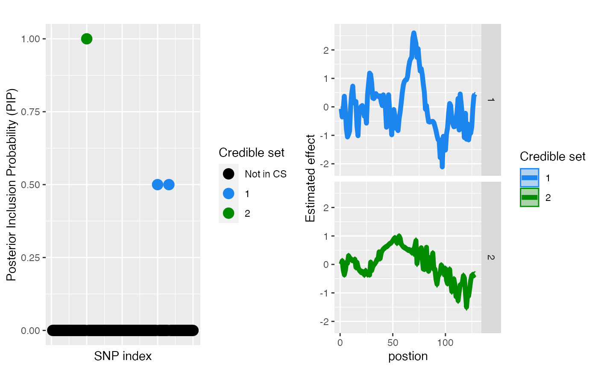
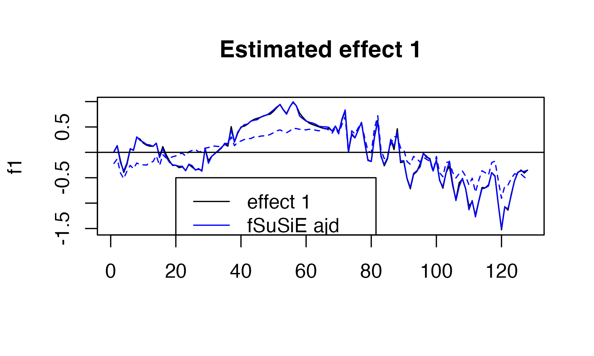
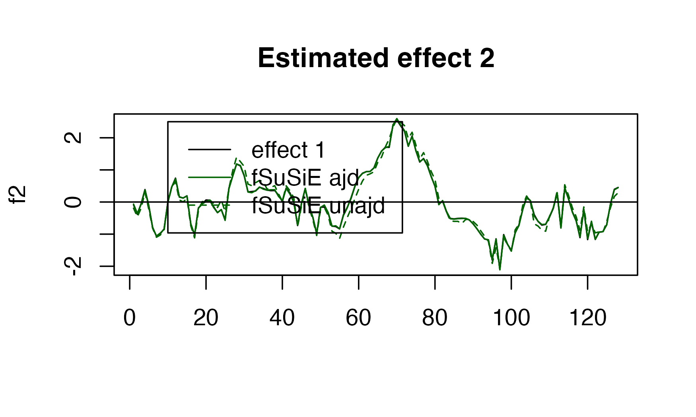

vignettes/Adjusting_covariate.Rmd
Adjusting_covariate.RmdIn order to reduce the number of false positives in fine-mapping analysis, it is often important to account for potential counfounders. As most of the tools in the SuSiE suite don’t account for confounders while performing fine-mapping, it is important to account for counfounders prior to the analysis. Similar problem arise with fSuSiE. While it is relatively straightforward to adjust univariate phenotypes. It is more complicated to adjust curves/profile for confounding. Thus we implemented a user friendly function that performs this preprocessing step.
knitr::opts_chunk$set(
echo = TRUE,
message = FALSE,
warning = FALSE
)
library(susiF.alpha)
library(susieR)
library(wavethresh)## Loading required package: MASS## WaveThresh: R wavelet software, release 4.6.8, installed## Copyright Guy Nason and others 1993-2016## Note: nlevels has been renamed to nlevelsWT
set.seed(2)
data(N3finemapping)
attach(N3finemapping)
rsnr <- 1 #expected root signal noise ratio
pos1 <- 25 #Position of the causal covariate for effect 1
pos2 <- 75 #Position of the causal covariate for effect 2
lev_res <- 7#length of the molecular phenotype (2^lev_res)
f1 <- simu_IBSS_per_level(lev_res )$sim_func#first effect
f2 <- simu_IBSS_per_level(lev_res )$sim_func #second effect
f1_cov <- simu_IBSS_per_level(lev_res )$sim_func #effect cov 1
f2_cov <- simu_IBSS_per_level(lev_res )$sim_func #effect cov 2
f3_cov <- simu_IBSS_per_level(lev_res )$sim_func #effect cov 3Here the observed data is a mixture of technical noise and genotype signal (target.data). Our goal is to remove the technical noise.
Geno <- N3finemapping$X[,1:100]
tt <- svd(N3finemapping$X[,500:700])
Cov <- matrix(rnorm(3*nrow(Geno ),sd=2), ncol=3)
target.data <-list()
noisy.data <-list()
for ( i in 1:nrow(Geno))
{
f1_obs <- f1
f2_obs <- f2
noise <- rnorm(length(f1), sd= (1/ rsnr ) * var(f1))
target.data [[i]] <- Geno [i,pos1]*f1_obs +noise +Geno [i,pos2]*f2_obs
noisy.data [[ i]] <- Cov [i,1]*f1_cov + Cov [i,2]*f2_cov + Cov [i,3]*f3_cov
}
technical.noise <- do.call(rbind, noisy.data)
target.data <- do.call(rbind, target.data)
Y <- technical.noise+target.dataWe use the function to regress out the effect of the covariate (in the matrix Cov). The function output an object that contains * the adjusted curves * the fitted effect (covariate) * the corresponding position for the mapped adjusted curves and fitted curves
NB: If you input matrix Y has a number of column that is not a power of 2. Then will remap the corresponding curves to a grid with \(2^K\) points. Note that if the corresponding positions of the columns are not evenly spaced then it is important to provide these positions in the pos arugment. The output of the will provide the adjusted curves and the fitted effect matrices mapped on the grid provided in the pos entry
Est_effect <- EBmvFR(Y,X=Cov,adjust=TRUE )## [1] "Starting initialization"
## [1] "Discarding 0 wavelet coefficients out of 128"
## [1] "Initialization done"
## [1] "Fitting effect 1 , iter 1"
## [1] "Fitting effect 2 , iter 1"
## [1] "Fitting effect 3 , iter 1"
## [1] "Fitting effect 1 , iter 2"
## [1] "Fitting effect 2 , iter 2"
## [1] "Fitting effect 3 , iter 2"
## [1] "Fitting effect 1 , iter 3"
## [1] "Fitting effect 2 , iter 3"
## [1] "Fitting effect 3 , iter 3"
## [1] "Fitting effect 1 , iter 4"
## [1] "Fitting effect 2 , iter 4"
## [1] "Fitting effect 3 , iter 4"
plot(Est_effect$fitted_func[1,],type = "l",
col="blue",
lty=2,
lwd=2)
lines(f1_cov)
legend(x=60,y=-1,
lwd=c(1,2),
lty=c(1,2),
legend=c('effect','estimated'))
Y_corrected <-Est_effect$Y_adjustedYou can also perform the adjustment yourself by accessing the fitted curves directly (and potentially only removing the effect your are interested in)
Here you can see that the corrected data are closely matching the actual underlying signals
We can now fine-map our curves without to be worried of potential confounding due to population stratification or age
## [1] "Starting initialization"
## [1] "Data transform"
## [1] "Discarding 0 wavelet coefficients out of 128"
## [1] "Data transform done"
## [1] "Initializing prior"
## [1] "Initialization done"
## [1] "Fitting effect 1 , iter 1"
## [1] "Fitting effect 2 , iter 1"
## [1] "Fitting effect 3 , iter 1"
## [1] "Adding 7 extra effects"
## [1] "Fitting effect 1 , iter 2"
## [1] "Fitting effect 2 , iter 2"
## [1] "Fitting effect 3 , iter 2"
## [1] "Fitting effect 4 , iter 2"
## [1] "Fitting effect 5 , iter 2"
## [1] "Fitting effect 6 , iter 2"
## [1] "Fitting effect 7 , iter 2"
## [1] "Fitting effect 8 , iter 2"
## [1] "Fitting effect 9 , iter 2"
## [1] "Fitting effect 10 , iter 2"
## [1] "Discarding 8 effects"
## [1] "Fitting effect 1 , iter 3"
## [1] "Fitting effect 2 , iter 3"
## [1] "Discarding 8 effects"
## [1] "Greedy search and backfitting done"
## [1] "Fitting effect 1 , iter 4"
## [1] "Fitting effect 2 , iter 4"
## [1] "Fine mapping done, refining effect estimates using cylce spinning wavelet transform"We can check the results
plot_susiF(out)
### Comparison with fine-mapping without adjustement
We can compare the performance when not adjusting
## [1] "Starting initialization"
## [1] "Data transform"
## [1] "Discarding 0 wavelet coefficients out of 128"
## [1] "Data transform done"
## [1] "Initializing prior"
## [1] "Initialization done"
## [1] "Fitting effect 1 , iter 1"
## [1] "Fitting effect 2 , iter 1"
## [1] "Fitting effect 3 , iter 1"
## [1] "Adding 7 extra effects"
## [1] "Fitting effect 1 , iter 2"
## [1] "Fitting effect 2 , iter 2"
## [1] "Fitting effect 3 , iter 2"
## [1] "Fitting effect 4 , iter 2"
## [1] "Fitting effect 5 , iter 2"
## [1] "Fitting effect 6 , iter 2"
## [1] "Fitting effect 7 , iter 2"
## [1] "Fitting effect 8 , iter 2"
## [1] "Fitting effect 9 , iter 2"
## [1] "Fitting effect 10 , iter 2"
## [1] "Discarding 8 effects"
## [1] "Fitting effect 1 , iter 3"
## [1] "Fitting effect 2 , iter 3"
## [1] "Discarding 8 effects"
## [1] "Greedy search and backfitting done"
## [1] "Fitting effect 1 , iter 4"
## [1] "Fitting effect 2 , iter 4"
## [1] "Fine mapping done, refining effect estimates using cylce spinning wavelet transform"Here we can the performance
plot( f1, type="l", main="Estimated effect 1", xlab="")
lines(get_fitted_effect(out,l=2),col='blue' )
lines(get_fitted_effect(out_unadj,l=2),col='blue' , lty=2)
abline(a=0,b=0)
legend(x= 20,
y=-0.5,
lty= c(1,1,2),
legend = c("effect 1","fSuSiE ajd", "fSuSiE unajd " ),
col=c("black","blue","blue" )
)
plot( f2, type="l", main="Estimated effect 2", xlab="")
lines(get_fitted_effect(out,l=1),col='darkgreen' )
lines(get_fitted_effect(out_unadj,l=1),col='darkgreen' , lty=2)
abline(a=0,b=0)
legend(x= 10,
y=2.5,
lty= c(1,1,2),
legend = c("effect 1","fSuSiE ajd", "fSuSiE unajd " ),
col=c("black","darkgreen","darkgreen" )
)